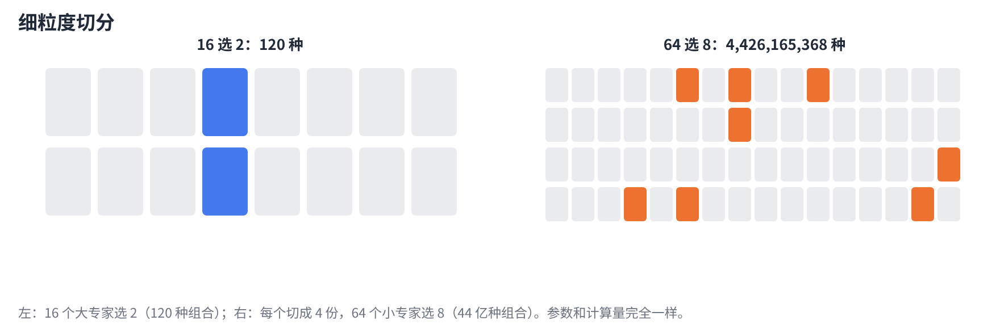
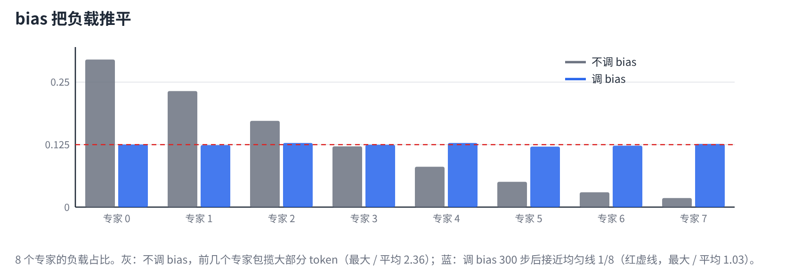
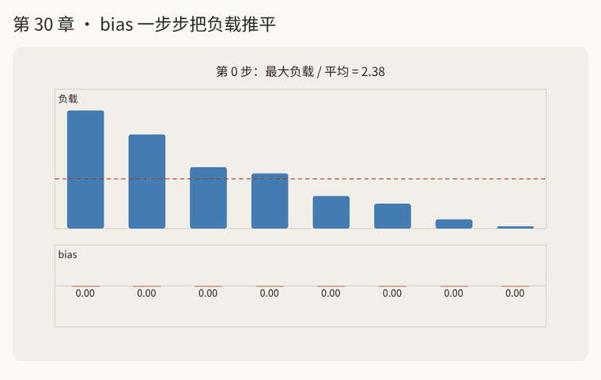

第 30 章 · DeepSeekMoE：专家切细、共享专家，以及不加 loss 的负载均衡
本地运行
git clone https://github.com/wikieden/beyond-transformer
cd beyond-transformer/code/notebooks
pip install jupyterlab torch numpy
jupyter lab ch30_deepseekmoe.ipynb也可以下载后直接用 VS Code 打开 .ipynb 运行。需要 GPU 的章节在 Colab 里选「代码执行程序 → 更改运行时类型 → GPU」。
本章回答：把 16 个大专家切成 64 个小专家、每个 token 从选 2 个变成选 8 个，参数和计算都没变，为什么效果更好？“共享专家”是什么，为什么每个 token 都要走它？第 28 章的均衡 loss 会干扰主任务，DeepSeek 怎么做到“不加 loss 也能均衡”：只给每个专家调一个 bias，这个 bias 为什么只影响“选谁”、不影响“加权多少”？
讲解日期：2026-11-26 · 上一章：第 29 章 router z-loss 与 Mixtral · 下一章：第 31 章 online softmax（待写）
对应原文：DeepSeekMoEtransformer-deep-dive/materials/text/papers/deepseekmoe-2401.06066.txt§3.1 Fine-Grained Expert Segmentation L254–L300（每个专家切成 m 份、中间层缩成 1/m，激活数乘 m；式 6–8；N = 16 时 C(16, 2) = 120，切成 4 份后 C(64, 8) = 4,426,165,368）、§3.2 Shared Expert Isolation L301 起（隔离出共享专家，存公共知识，减少冗余）；Auxiliary-Loss-Free Load Balancingaux-loss-free-balancing-2408.15664.txt摘要 L27–L39、Figure 2（α 小均衡差、α 大效果差的两难）、§3 式 (3) 与 Algorithm 1 L170–L215（给分数加 bias 只用于选 top-K，不加到门控权重上；e_i = 平均负载 − c_i，b_i ← b_i + u·sign(e_i)；按上一批的负载更新，避免泄露未来 token）；DeepSeek-V2llm-full-stack/materials/text/papers/deepseek-v2-mla-2405.04434.txtL597–L600（2 个共享专家 + 160 个路由专家选 6）
本章缩写：fine-grained（细粒度：专家切得更小、更多）；m = 切分倍数；mN、mK = 切分后的专家总数、每个 token 激活数；shared expert（共享专家：每个 token 都走）；routed expert（路由专家：由 router 选）；aux-loss-free（不用辅助损失的）；b_i = 专家 i 的偏置；u = 偏置更新速率；c_i = 专家 i 收到的 token 数；MaxVio = 最大负载违反度（最忙的专家比平均多多少）。全部缩写见 附录 · 缩写与术语表
讲解
第一步：把专家切细：组合数暴涨（2026-11-26）
类比：拼乐高。 16 块大积木每次选 2 块，能拼出 120 种形状；把每块拆成 4 块小积木（64 块），每次选 8 块（总量不变），能拼出 44 亿种形状。表达的“组合”多得多，每块小积木也可以更专一。
DeepSeekMoE §3.1（L254–L300）：每个专家的 FFN 中间层缩成 1/m，专家数变成 mN，每个 token 激活 mK 个。参数和计算量都不变。
数字演示（N = 16、K = 2、m = 4，d = 256、d_ff = 1024）：
| 专家数 | 每个 token 选 | 每个专家的 d_ff | 组合数 | 专家参数 | |
|---|---|---|---|---|---|
| 传统 | 16 | 2 | 1024 | 120 | 12,582,912 |
| 切细 | 64 | 8 | 256 | 4,426,165,368 | 12,582,912 |
论文的论证：专家少时，一个专家要承接很杂的知识，很难专精；专家多、每个 token 选得多，知识可以拆开分给不同的专家，每个专家更专一。Qwen3 的 MoE 也用了细粒度（128 个专家选 8，第 24 章）。代价是 router 更大、调度更碎，系统实现更难。

图 30-1 · 左：16 个大专家选 2；右：每个切成 4 份，64 个小专家选 8。参数和计算量一样，可能的组合从 120 涨到 44 亿一句话：把每个专家切成 m 份、每个 token 选 m 倍个，参数和计算不变，可选的专家组合数暴涨，专家可以更专精。
第二步：共享专家：每个 token 都走（2026-11-26）
类比：每个科室都要用的基础检查（量血压、问病史），不如单独设一个“基础科”，所有病人都先过一遍。
§3.2（L301 起）：不同 token 选了不同的专家，可它们往往都需要一些通用知识（语法、常见词），结果每个专家都在自己的参数里存一份，冗余。DeepSeekMoE 隔离出几个共享专家，每个 token 都经过它们；路由专家只负责“剩下的、需要专精的”部分。
DeepSeek-V2（L597–L600）：每层 2 个共享专家 + 160 个路由专家选 6。共享专家也占计算量，所以加了共享专家，路由专家就少选几个，保持总计算不变。Qwen3 的 MoE 反而去掉了共享专家（第 24 章），这一点各家选择不同。
一句话：共享专家每个 token 都走，存公共知识；路由专家各自专精，减少重复存储。
第三步：不加 loss，只调 bias（2026-11-26）
第 28 章的均衡 loss 有个两难（aux-loss-free 论文 Figure 2）：系数 α 小，均衡不好；α 大，它的梯度干扰主任务，效果变差。
Loss-Free Balancing（§3，L170–L215）：给每个专家一个 bias b_i，只在选 top-K 时加到分数上：
门控权重仍然是原始的 s_{i,t}，不带 bias（L190–L193）。每训一批，统计每个专家的负载 c_i，按 Algorithm 1 更新：
负载低于平均的专家 bias 加大（更容易被选上），高于平均的减小。b 不是通过梯度学的，不进反向传播，所以不给主任务添加任何干扰梯度。按上一批的负载更新，避免用当前序列的信息泄露未来 token（L209–L213）。
数字演示（8 个专家选 2，router 天然偏爱前几个专家；每批 512 个 token，u = 0.01，训 300 步）：
| 做法 | 8 个专家的负载（占比） | 最大 / 平均 |
|---|---|---|
| 不调 bias | [0.295, 0.232, 0.173, 0.121, 0.081, 0.051, 0.029, 0.018] | 2.36 |
| 调 bias 300 步 | [0.125, 0.124, 0.128, 0.125, 0.128, 0.121, 0.123, 0.126] | 1.03 |
学到的 bias：[−0.93, −0.66, −0.38, −0.03, 0.25, 0.53, 0.77, 1.08]：天然受欢迎的专家被减分，冷门的被加分。
门控权重只用原始分数：分数 [0.6, 0.3, 0.1, 0.05]，即使 bias 让选中的是专家 0 和 1，权重也是 0.667 和 0.333（按原始分数归一化），bias 不改变“加权多少”。DeepSeek-V3 用的就是这种方法（外加一个很小的序列级均衡 loss）。

图 30-2 · 8 个专家的负载占比。灰：不调 bias，前几个专家包揽大部分 token；蓝：调 bias 300 步后，接近 1/8 的均匀线（红虚线）场景代码：Loss-Free Balancing 的 bias 更新（按 Algorithm 1 写的 PyTorch 示意；本书 chapter-code 只用 NumPy，这段没跑过）：
scores = torch.sigmoid(x @ self.gate.T) # (T, E)，DeepSeek-V3 用 sigmoid 打分
_, idx = (scores + self.bias).topk(K, dim=-1) # bias 只用来选
w = scores.gather(-1, idx); w = w / w.sum(-1, keepdim=True) # 权重用原始分数
...
with torch.no_grad(): # 不进梯度
load = torch.bincount(idx.flatten(), minlength=E).float()
self.bias += u * torch.sign(load.mean() - load)
在自己的 MoE 上实现三种均衡方法（Switch 的 aux loss、router z-loss、aux-free bias），加上细粒度和共享专家，画负载直方图、和同激活参数的 dense 模型比 loss，是里程碑 T-M6。
一句话：Loss-Free Balancing 给每个专家一个只用于选 top-K 的 bias，按“负载低就加、高就减”更新，不进梯度、不改门控权重，均衡不再干扰主任务。
动画演示：bias 一步步把负载推平

可交互版：animations/30-deepseekmoe.html（滑块：训练步数、更新速率 u；勾选框：调 bias）。
怎么看：
- 上面 8 根柱子是专家的负载，红虚线是均匀的 1/8（第三步）；
- 下面 8 根柱子是每个专家当前的 bias：负载高的往下走、负载低的往上走；
- 不勾“调 bias”：负载一直偏；勾上：几十步后负载接近均匀；把 u 调大，推平得更快但会来回抖。
练习与作答记录
题 1（第一步）：32 个专家选 2，组合数是多少？每个切成 2 份、64 个选 4 呢？
题 2（第二步）：DeepSeek-V2 每层 2 个共享 + 6 个路由专家被激活，每个专家中间层 1536、d = 5120，每层每个 token 激活的专家参数是多少（SwiGLU 三个矩阵）？
题 3（第三步）：上一批里 4 个专家的负载是 [40, 30, 20, 10]，u = 0.001，bias 都从 0 开始，更新后的 bias 是多少？下一批里哪些专家更容易被选上？
口诀
大积木拆小积木，选得更多，组合从一百二十涨到四十四亿；参数和计算都不变。
公共知识交给共享专家，人人都走；路由专家各自专精。
不加 loss 只调 bias：负载低就加、高就减，只管选谁、不管加权，不进梯度，均衡不扰主任务。
本章复习卡片
必背：B64–B65（B64 细粒度切分与共享专家；B65 Loss-Free Balancing 的 bias 更新）。练习做完后，按答错、卡住的地方再补。
附录 · 延伸阅读
留给以后深入学习用，不影响本章主线。★ 是建议先读的。
推荐阅读
| 读什么 | 读哪里 | 读它为了什么 |
|---|---|---|
| ★ DeepSeekMoE（Dai 等 2024） | §3.1–§3.2 L254–L320 | 细粒度切分的组合数论证、共享专家 |
| ★ Auxiliary-Loss-Free Load Balancing（Wang 等 2024） | §3 L165–L215；Figure 2 | 只调 bias 的均衡 |
| DeepSeek-V2 / V3 | MoE 配置（V2 L597–L600；V3 §2） | 工业上的组合 |
| 本书 第 28 章 负载均衡 | 全部 | 均衡 loss 的两难 |
| 《数学与实验统计》第 45 章 MoE | aux-free 一节 | 同一方法的数学 |
数学原理
- 组合数：C(mN, mK) ≫ C(N, K)；m = 4 时从 120 到 4.4 × 10⁹。
- 参数不变：mN 个专家 × (d_ff/m) = N × d_ff，激活 mK × (d_ff/m) = K × d_ff。
- bias 更新是一种积分控制：b 累积了过去的负载偏差，稳定后 sign(e_i) 在 ±1 之间来回，负载在均值附近小幅抖动，抖动幅度和 u 成正比。
公式清单
| 公式 | 意思 |
|---|---|
| 专家数 N → mN，激活 K → mK，d_ff → d_ff/m | 细粒度切分 |
| \(h = u + \sum\text{FFN}^{shared}(u) + \sum_{\text{Top}K}g_i\text{FFN}_i^{routed}(u)\) | 共享 + 路由专家 |
| \(g_{i,t} = s_{i,t}\)，若 \(s_{i,t} + b_i \in \text{Top}K\) | bias 只用来选 |
| \(b_i \leftarrow b_i + u\cdot\text{sign}(\bar c - c_i)\) | bias 更新 |
代码对照：把本章的数字用代码算一遍
NumPy。代码在仓库本地
beyond-transformer/solutions/chapter-code/ch30_deepseekmoe.py，配套测试tests/test_ch30.py，notebook 在notebooks/ch30_deepseekmoe.ipynb：
bash cd beyond-transformer/solutions/chapter-code uv run python ch30_deepseekmoe.py uv run pytest tests/test_ch30.py
讲义 ↔ 代码：
| 讲义 | 公式 | 写法 | 跑出来 |
|---|---|---|---|
| 第一步 组合数 | C(mN, mK) | fine_grained() |
120 → 4,426,165,368 |
| 第三步 bias 均衡 | Algorithm 1 | simulate(use_bias=...) |
最大 / 平均 2.36 → 1.03 |
| 第三步 门控权重 | 原始分数 | gate_value(s, [0, 1]) |
[0.667, 0.333, 0, 0] |
关键几行：
chosen = np.argsort(-(s + b), axis=1)[:, :k] # bias 只用来选
b += u * np.sign(load.mean() - load) # 负载低于平均 → bias 加大
g[chosen] = s[chosen] / s[chosen].sum() # 权重用原始分数
代码里才看得到的 2 件事：
- router 分数是“固定偏好 + 噪声”的玩具：真实 router 的分数在训练中一直在变，bias 要一边追一边调；这里的偏好不变，所以 bias 会收敛。
- sign 让更新步长固定：不管偏差多大，每步只挪 u；所以 u 太小追不上、太大会来回抖。调 u 是这个方法唯一的超参。
自己改一改（不影响练习答案）：
- 把
simulate的 u 改成 0.1，最大 / 平均和 bias 怎么变？负载会抖吗？ - 把偏好
pref从 linspace(1, −1) 改成 linspace(3, −3)，300 步够不够推平？